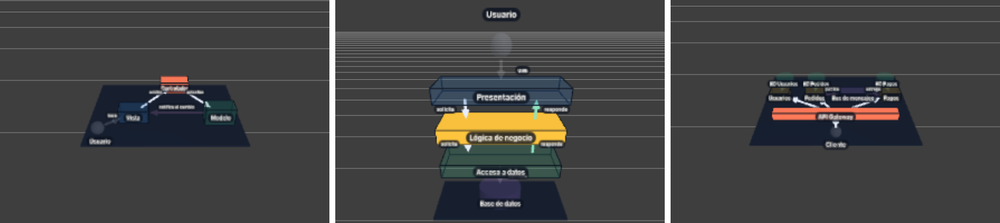
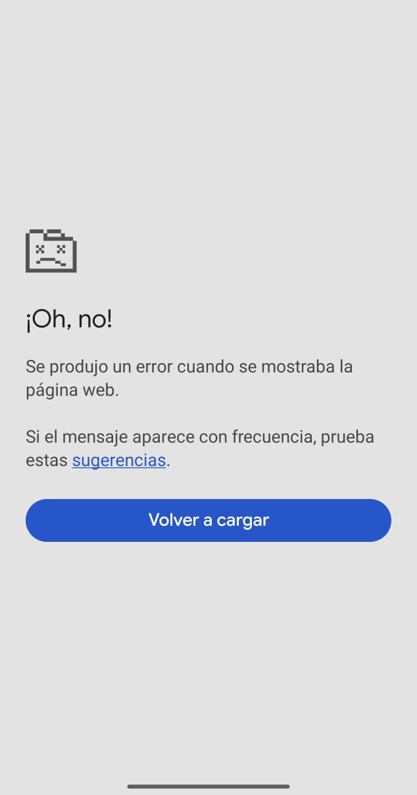

Un Enlace une dos piezas por id, con un tipo (llamada, evento, datos) que decide el color de la flecha.
Portada
Electiva · PWA — Sub-bloque B · Proyecto Módulo AR · Sesión 14 de 19
Modelos de arquitectura en 3D
Hasta hoy el Atlas mostraba un cubo de prueba. Hoy llegan MVC, capas y microservicios, dibujados con Three.js a partir de datos: los ves en 3D, tocas una pieza para leer qué hace y los apoyas en tu mesa con AR.
AsignaturaElectiva - PWA
Sesión14 de 19 · Proyecto Módulo AR
InstituciónUPTC
SESIÓN 14
Del cubo de prueba al catálogo
Un modelo es una lista de piezas y de enlaces. Un solo constructor los convierte en objetos 3D, se normalizan para que la AR no cambie, y cada pieza se explica al tocarla.
Modelos como datosTocar y explicarMigrar la base
Antes de empezar
Objetivos de aprendizaje
- Describir un modelo de arquitectura como datos (piezas y enlaces).
- Construir un generador con Three.js y normalizarlo para que la lógica de AR no cambie.
- Elegir una pieza tocándola (
Raycaster), distinguiendo un toque de un arrastre, y resaltarla. - Servir la explicación desde una ficha JSON: caché, red o el texto del código.
- Migrar una base IndexedDB que cambia de clave sin perder favoritos ni notas.
- Diseñar la interacción en AR cuando «tocar» ya significa «colocar»: ◀ ▶ y
beforexrselect.
.zip
Recursos: pwa-ar-objetos3d-sesion39.zip
CHECKPOINT · CIERRE DE LA SESIÓN 39 · PUNTO DE PARTIDA
El Atlas con AR completa y el cubo de prueba.
.zip
Recursos: pwa-ar-objetos3d-sesion40.zip
VERSIÓN TERMINADA DE ESTA SESIÓN
Agrega src/modelos/, las fichas JSON y los cambios del visor. Intenta construirlo tú primero.
Modelos como datos · 1.1
Cómo se guarda un modelo de arquitectura
| Opción | Lo bueno | Lo malo para este curso |
|---|---|---|
Archivos .glb | Cualquier forma, texturas, animaciones | Hay que modelar y exportar cada uno; binarios que no se leen ni se corrigen como texto; pesan. |
| Una función por modelo | Control total | Código repetido: cada modelo reescribe flechas, rótulos y colores. |
| Datos + un constructor genérico | Un patrón nuevo son ~20 líneas de datos, que se leen y se prueban como texto | Solo cajas, cilindros y esferas: esquema didáctico, no réplica realista. |
Elegimos la tercera: separar lo que cambia (los datos) de lo que no (el motor). Y un diagrama de arquitectura ya es una lista de cajas y flechas.
Modelos como datos · 1.2
Tipos: una pieza
src/modelos/tipos.ts (Pieza)
export interface Pieza {
id: string;
nombre: string;
rol: Rol;
forma: Forma;
/** Centro de la pieza (x derecha, y arriba, z hacia el espectador). */
pos: [number, number, number];
/** Ancho, alto y fondo. */
tam: [number, number, number];
/** Frase corta: viaja con el código, así se lee aunque no haya conexión. */
resumen: string;
/** Dónde va el rótulo: «arriba» de la pieza (por defecto), «abajo», o «frente», sobre su cara delantera. */
rotulo?: "arriba" | "abajo" | "frente";
}Dos textos a propósito: el
resumen viaja con el código (se lee siempre); la explicación larga va en una ficha que se descarga.Modelos como datos · 1.3
Tipos: un enlace y un modelo
src/modelos/tipos.ts (DefinicionModelo)
export interface DefinicionModelo {
id: string;
nombre: string;
/** Una línea para la lista de modelos. */
resumen: string;
piezas: Pieza[];
enlaces: Enlace[];
/** Altura de la cámara de la vista normal, en grados sobre el horizonte (cada modelo se lee mejor desde un ángulo distinto). */
elevacion?: number;
/** Factor de la distancia de la cámara (menor = más cerca). Por defecto 1. */
distancia?: number;
}Modelos como datos · 1.4
Tres decisiones de diseño
1
El rol decide el color
Una pieza dice «soy de presentación»; una tabla asigna el azul. El mismo color significa lo mismo en los tres modelos.
2
Dos textos por pieza
resumen en el código (siempre disponible) y Ficha en un JSON descargable (la Sesión 37 ya sabía bajarlo).
3
El tipo de enlace se ve
«La vista llama al controlador» y «el modelo notifica a la vista» son flechas de naturaleza distinta: una blanca, una rosada.
Los modelos · 2.1
MVC, como datos
src/modelos/mvc.ts
export const MVC: DefinicionModelo = {
id: "mvc",
nombre: "Patrón MVC",
resumen: "Tres responsabilidades separadas: datos y reglas, pantalla, y quien las coordina.",
elevacion: 34,
piezas: [
{ id: "usuario", nombre: "Usuario", rol: "actor", forma: "esfera", pos: [-6.6, 0, 4], tam: [1.1, 1.1, 1.1], rotulo: "abajo", resumen: "Quien toca la pantalla y mira el resultado." },
{ id: "vista", nombre: "Vista", rol: "presentacion", forma: "caja", pos: [-3.8, 0, 1.8], tam: [2.6, 1.2, 1.5], rotulo: "frente", resumen: "Dibuja los datos y capta lo que hace el usuario. No toma decisiones." },
{ id: "controlador", nombre: "Controlador", rol: "coordinacion", forma: "caja", pos: [0, 0, -3.4], tam: [2.8, 1.2, 1.5], rotulo: "frente", resumen: "Recibe las acciones de la vista y decide qué debe hacer el modelo." },
{ id: "modelo", nombre: "Modelo", rol: "datos", forma: "caja", pos: [3.8, 0, 1.8], tam: [2.6, 1.6, 1.5], rotulo: "frente", resumen: "Guarda los datos y aplica las reglas del negocio. No sabe cómo se ven." },
],
enlaces: [
{ de: "usuario", a: "vista", etiqueta: "toca", tipo: "llamada" },
{ de: "vista", a: "controlador", etiqueta: "acción", tipo: "llamada" },
{ de: "controlador", a: "modelo", etiqueta: "actualiza", tipo: "llamada" },
{ de: "modelo", a: "vista", etiqueta: "notifica el cambio", tipo: "evento" },
],
};Cuatro piezas y cuatro enlaces. El controlador al fondo y la vista y el modelo al frente forman el triángulo clásico.
Los modelos · 2.2
Capas, como datos
src/modelos/capas.ts
export const CAPAS: DefinicionModelo = {
id: "capas",
nombre: "Arquitectura en capas",
resumen: "Niveles apilados: cada capa solo habla con la inmediatamente inferior.",
elevacion: 10,
piezas: [
{ id: "usuario", nombre: "Usuario", rol: "actor", forma: "esfera", pos: [0, 6.3, 0], tam: [1.1, 1.1, 1.1], resumen: "Quien usa la aplicación." },
{ id: "presentacion", nombre: "Presentación", rol: "presentacion", forma: "caja", pos: [0, 4.2, 0], tam: [7, 0.8, 3.2], rotulo: "frente", resumen: "Pantallas y formularios. Muestra datos y recoge acciones." },
{ id: "negocio", nombre: "Lógica de negocio", rol: "logica", forma: "caja", pos: [0, 2.1, 0], tam: [7, 0.8, 3.2], rotulo: "frente", resumen: "Las reglas: validar, calcular, decidir. Aquí vive lo que hace valiosa a la aplicación." },
{ id: "acceso", nombre: "Acceso a datos", rol: "datos", forma: "caja", pos: [0, 0, 0], tam: [7, 0.8, 3.2], rotulo: "frente", resumen: "Traduce la lógica en consultas: lee y escribe sin que las capas de arriba conozcan el almacenamiento." },
{ id: "bd", nombre: "Base de datos", rol: "infra", forma: "cilindro", pos: [0, -2.4, 0], tam: [2.8, 1, 2.8], rotulo: "frente", resumen: "Donde los datos viven de forma permanente." },
],
enlaces: [
{ de: "usuario", a: "presentacion", etiqueta: "usa", tipo: "llamada" },
{ de: "presentacion", a: "negocio", etiqueta: "solicita", tipo: "llamada", desvio: [-2, 0, 0] },
{ de: "negocio", a: "presentacion", etiqueta: "responde", tipo: "datos", desvio: [2, 0, 0] },
{ de: "negocio", a: "acceso", etiqueta: "solicita", tipo: "llamada", desvio: [-2, 0, 0] },
{ de: "acceso", a: "negocio", etiqueta: "responde", tipo: "datos", desvio: [2, 0, 0] },
{ de: "acceso", a: "bd", etiqueta: "consulta", tipo: "llamada" },
],
};Dos flechas entre las mismas capas (
solicita baja, responde sube): cada una con su desvio para no encimarse.Los modelos · 2.3
Los tres modelos en el visor

Azul presentación · naranja coordinación · amarillo lógica · verde datos · morado infraestructura · flechas rosadas = eventos. Microservicios tiene una base propia por servicio: no hay un cilindro compartido.
Los modelos · 2.4
Un catálogo recorrido por toda la app
| Modelo | Piezas | Enlaces | Qué debe entenderse |
|---|---|---|---|
| MVC | 4 | 3 llamadas, 1 evento | La vista no decide; el modelo avisa sin saber quién escucha. |
| Capas | 5 | 4 llamadas, 2 de datos | Cada capa solo habla con la de abajo. |
| Microservicios | 9 | 7 llamadas, 2 eventos | Puerta única, servicios independientes y un bus que los desacopla. |
src/modelos/index.ts
export const CATALOGO: DefinicionModelo[] = [MVC, CAPAS, MICROSERVICIOS];
export function modeloPorId(id: string): DefinicionModelo | undefined {
return CATALOGO.find((m) => m.id === id);
}Pestañas, tarjetas y descargas se construyen recorriendo
CATALOGO: agregar un modelo es un archivo y una línea.Constructor · 3.1
construirModelo: lo que devuelve
Es el único sitio que sabe de Three.js. Devuelve la raíz de la escena, un mapa id → malla (lo tocable) y dos funciones.
src/modelos/constructor.ts (ModeloConstruido)
export interface ModeloConstruido {
/** Raíz ya normalizada: se cuelga de `grupo` en el visor. */
raiz: THREE.Group;
/** Altura del centro del modelo ya normalizado (su base está en -0,8). */
centroY: number;
/** Mallas de las piezas por id (con `userData.piezaId`): lo que se puede tocar. */
piezas: Map<string, THREE.Mesh>;
/** Resalta una pieza y atenúa el resto; null quita el resalte. */
resaltar(id: string | null): void;
destruir(): void;
}Constructor · 3.2
Una malla por pieza
src/modelos/constructor.ts (piezas)
for (const p of def.piezas) {
const [w, h, d] = p.tam;
const geometria =
p.forma === "esfera" ? new THREE.SphereGeometry(w / 2, 32, 20) : p.forma === "cilindro" ? new THREE.CylinderGeometry(w / 2, w / 2, h, 36) : new THREE.BoxGeometry(w, h, d);
const color = ROLES[p.rol].color;
const material = new THREE.MeshStandardMaterial({ color, roughness: 0.5, metalness: 0.05, transparent: true, emissive: color, emissiveIntensity: 0 });
const malla = new THREE.Mesh(geometria, material);
malla.position.set(...p.pos);
malla.userData.piezaId = p.id;
if (p.forma === "caja") {
const aristas = new THREE.LineSegments(new THREE.EdgesGeometry(geometria), new THREE.LineBasicMaterial({ color: 0x0b1220 }));
malla.add(aristas);
}
solido.add(malla);
piezas.set(p.id, malla);
const rotulo = crearRotulo(p.nombre, 0.4 * k);
if (p.rotulo === "frente") rotulo.position.set(p.pos[0], p.pos[1], p.pos[2] + d / 2 + 0.05);
else if (p.rotulo === "abajo") rotulo.position.set(p.pos[0], p.pos[1] - h / 2 - 0.45 * k, p.pos[2]);
else rotulo.position.set(p.pos[0], p.pos[1] + h / 2 + 0.45 * k, p.pos[2]);
decorado.add(rotulo);
}Constructor · 3.3
Tres detalles que no lo parecen
1
transparent: true desde el inicio
El resaltado baja la opacidad. Pasar un material de opaco a transparente en caliente lo recompila; así se evita un parpadeo.
2
Dos grupos
solido y decorado. Rótulos y flechas no cuentan al medir el modelo: un rótulo ancho no debe ensancharlo.
3
La base
Una placa oscura bajo todo. Sin ella el esquema flota; con ella «apoya», y en AR eso es literal.
Constructor · 3.4
Flechas que salen del borde, no del centro
src/modelos/constructor.ts (puntoDeBorde)
function puntoDeBorde(p: Pieza, centro: THREE.Vector3, dir: THREE.Vector3): THREE.Vector3 {
const [w, h, d] = p.tam;
let t: number;
if (p.forma === "esfera") {
t = w / 2;
} else if (p.forma === "cilindro") {
const radial = Math.hypot(dir.x, dir.z);
const tRadial = radial > 1e-6 ? w / 2 / radial : Infinity;
const tAxial = Math.abs(dir.y) > 1e-6 ? h / 2 / Math.abs(dir.y) : Infinity;
t = Math.min(tRadial, tAxial);
} else {
const k = Math.max(Math.abs(dir.x) / w, Math.abs(dir.y) / h, Math.abs(dir.z) / d);
t = 0.5 / k;
}
return centro.clone().addScaledVector(dir, t);
}Caminar desde el centro en la dirección de la flecha hasta tocar el borde: esfera = radio; caja = el eje que «llega primero»; cilindro = pared o tapa, la menor.
Constructor · 3.5
Rótulos: texto en un canvas, pegado a un Sprite
src/modelos/constructor.ts (crearRotulo)
function crearRotulo(texto: string, altura: number, pequeno = false): THREE.Sprite {
const px = pequeno ? 40 : 56;
const lienzo = document.createElement("canvas");
const ctx = lienzo.getContext("2d")!;
const fuente = `600 ${px}px system-ui, -apple-system, "Segoe UI", sans-serif`;
ctx.font = fuente;
const ancho = Math.ceil(ctx.measureText(texto).width) + px;
lienzo.width = ancho;
lienzo.height = Math.round(px * 1.7);
ctx.font = fuente; // cambiar el tamaño del canvas borra el contexto
ctx.fillStyle = "rgba(11, 18, 32, 0.82)";
const r = lienzo.height / 2;
ctx.beginPath();
ctx.roundRect(0, 0, lienzo.width, lienzo.height, r);
ctx.fill();
ctx.fillStyle = "#ffffff";
ctx.textBaseline = "middle";
ctx.textAlign = "center";
ctx.fillText(texto, lienzo.width / 2, lienzo.height / 2 + 2);
const textura = new THREE.CanvasTexture(lienzo);
textura.colorSpace = THREE.SRGBColorSpace;
const sprite = new THREE.Sprite(new THREE.SpriteMaterial({ map: textura, transparent: true, depthTest: false }));
sprite.renderOrder = 10; // siempre encima: el texto debe poder leerse
sprite.scale.set((lienzo.width / lienzo.height) * altura, altura, 1);
return sprite;
}depthTest: false + renderOrder = 10: el texto se pinta encima de todo, aunque haya una caja delante.Constructor · 3.6
Lo que aprendió el primer dibujo
1
Escala con k
Rótulos y flechas se multiplican por k = lado / 6: un modelo grande no se llena de texto diminuto ni uno chico de texto gigante.
2
Dónde va el rótulo
El campo rotulo («arriba», «abajo», «frente») pone el nombre sobre la cara delantera de una caja plana, donde no estorba.
3
Cámara por modelo
elevacion: MVC 34°, Capas 10°, Microservicios 40°. Unas losas se leen de frente; una fila de servicios, desde arriba.
Normalizar · 4.1
Hacer que todo modelo se parezca al cubo
La lógica de AR (Sesiones 38–39) se escribió para un cubo de 1,6 con la base en y = −0,8: el hit-test, el ancla, los gestos y la escala inicial de 0,25 dependen de eso.
✗
Reescribir la lógica de AR
Una versión de la colocación por cada modelo. Riesgo de romper lo que ya funciona en teléfonos reales.
✓
Normalizar cada modelo
Su lado mayor mide 1,6 y su base queda en −0,8. Desde fuera, es indistinguible del cubo: la AR no cambia ni una línea.
Normalizar · 4.2
Tres líneas hacen el trabajo
src/modelos/constructor.ts (normalizar)
// Normalizar: caber en TAM_NORMALIZADO, centrado en x/z y con la base en y = -TAM/2.
const medida = new THREE.Box3().setFromObject(solido);
const tamano = medida.getSize(new THREE.Vector3());
const centro = medida.getCenter(new THREE.Vector3());
const escala = TAM_NORMALIZADO / Math.max(tamano.x, tamano.y, tamano.z);
interior.scale.setScalar(escala);
interior.position.set(-centro.x * escala, -TAM_NORMALIZADO / 2 - medida.min.y * escala, -centro.z * escala);
const raiz = new THREE.Group();
raiz.add(interior);Se mide la caja, se calcula la escala para que el lado mayor valga 1,6 y se coloca centrado en x/z con la base en −0,8.
Normalizar · 4.3
Fuera de AR: girar alrededor del centro
src/visor.ts (mostrarModelo)
function mostrarModelo(def: DefinicionModelo) {
if (modelo) {
grupo.remove(modelo.raiz);
modelo.destruir();
}
modelo = construirModelo(def);
grupo.add(modelo.raiz);
centroY = modelo.centroY;
piezaElegida = null;
if (!sesionAR) {
modelo.raiz.position.y = -centroY; // en la vista normal el modelo gira alrededor de su centro; en AR, apoyado por la base
grupo.rotation.set(0, 0, 0);
const elev = ((def.elevacion ?? 30) * Math.PI) / 180;
const dist = DISTANCIA_VISTA * (def.distancia ?? 1);
camara.position.set(0, dist * Math.sin(elev), dist * Math.cos(elev));
controles.target.set(0, 0, 0);
controles.update();
}
}El constructor devuelve
centroY; el visor lo resta en la vista normal y lo anula en AR. Medirlo con Box3 sobre el objeto ya escalado salía descentrado.Tocar una pieza · 5.1
Un rayo desde la cámara a través del dedo
src/visor.ts (tocar)
// ── Sesión 40: elegir una pieza tocándola (solo fuera de AR) ──
const rayoToque = new THREE.Raycaster();
let avisarToque: ((id: string | null) => void) | null = null;
let inicioToque: { x: number; y: number; t: number } | null = null;
const lienzo = renderer.domElement;
const alPulsar = (ev: PointerEvent) => {
inicioToque = { x: ev.clientX, y: ev.clientY, t: performance.now() };
};
const alSoltar = (ev: PointerEvent) => {
const ini = inicioToque;
inicioToque = null;
// Un arrastre (girar la vista) no es un toque: se mide cuánto se movió el dedo.
if (!ini || sesionAR || !modelo) return;
if (Math.hypot(ev.clientX - ini.x, ev.clientY - ini.y) > 8 || performance.now() - ini.t > 600) return;
const caja = lienzo.getBoundingClientRect();
rayoToque.setFromCamera(new THREE.Vector2(((ev.clientX - caja.left) / caja.width) * 2 - 1, -((ev.clientY - caja.top) / caja.height) * 2 + 1), camara);
const impactos = rayoToque.intersectObjects([...modelo.piezas.values()], false);
const id = (impactos[0]?.object.userData.piezaId as string | undefined) ?? null;
seleccionar(id === piezaElegida ? null : id); // volver a tocar la misma pieza la suelta
avisarToque?.(piezaElegida);
};
lienzo.addEventListener("pointerdown", alPulsar);
lienzo.addEventListener("pointerup", alSoltar);Tocar una pieza · 5.2
¿Toque o arrastre?
El mismo canvas ya gira la vista al arrastrar. Un dedo apoyado puede querer dos cosas: se mide cuánto se movió y cuánto tardó.
| Gesto | Movimiento | Duración | Resultado |
|---|---|---|---|
| Toque | < 8 px | < 600 ms | Elige la pieza (o la suelta si ya estaba elegida) |
| Arrastre | ≥ 8 px | — | Gira la vista; no elige nada |
| Pulsación larga | < 8 px | ≥ 600 ms | No elige nada |
| Toque en el vacío | < 8 px | < 600 ms | Suelta la selección |
En AR este toque está desactivado (
sesionAR): allí «tocar» ya significa «colocar».Tocar una pieza · 5.3
Resaltar: brillar, atenuar y responder en el dibujo
src/modelos/constructor.ts (resaltar)
function resaltar(id: string | null) {
for (const [pid, malla] of piezas) {
const m = malla.material as THREE.MeshStandardMaterial;
const activa = id === null || pid === id;
m.opacity = activa ? 1 : 0.28;
m.depthWrite = activa;
m.emissiveIntensity = id !== null && pid === id ? 0.55 : 0;
}
for (const f of flechas) {
const toca = id === null || f.enlace.de === id || f.enlace.a === id;
for (const m of f.materiales) m.opacity = toca ? 1 : 0.15;
}
}La pieza elegida brilla; las demás bajan a 28 %; solo quedan visibles las flechas que entran o salen de ella: «¿con quién habla?» se contesta en el dibujo.
Panel y fichas · 6.1
El panel se genera desde los datos
src/main.ts (elegirModelo)
function elegirModelo(id: string): void {
const def = modeloPorId(id);
if (!def) return;
modeloActualId = id;
piezaActual = null;
fichaActual = null;
visor.mostrarModelo(def);
tabsModelo.innerHTML = CATALOGO.map((m) => `<button type="button" class="tab" data-id="${m.id}" aria-pressed="${m.id === id}">${m.nombre}</button>`).join("");
tabsModelo.querySelectorAll<HTMLButtonElement>(".tab").forEach((b) => b.addEventListener("click", () => elegirModelo(b.dataset.id!)));
resumenModelo.textContent = def.resumen;
const roles = [...new Set(def.piezas.map((p) => p.rol))];
leyendaEl.innerHTML = roles.map((r) => `<span class="leyenda-item"><i style="background:${ROLES[r].css}"></i>${ROLES[r].nombre}</span>`).join("");
chipsPiezas.innerHTML = def.piezas.map((p) => `<button type="button" class="chip" data-id="${p.id}" aria-pressed="false"><i style="background:${ROLES[p.rol].css}"></i>${p.nombre}</button>`).join("");
chipsPiezas.querySelectorAll<HTMLButtonElement>(".chip").forEach((b) =>
b.addEventListener("click", () => {
const nueva = piezaActual === b.dataset.id ? null : b.dataset.id!;
visor.seleccionar(nueva);
sincronizarPieza(nueva);
})
);
pintarDetalle();
pintarPiezaAR();
// La ficha ampliada llega de la caché (sin conexión) o de la red; si no hay ninguna, se usa solo el código.
void leerFicha(id).then((f) => {
if (modeloActualId !== id) return;
fichaActual = f;
pintarDetalle();
pintarPiezaAR();
});
}Tocar el canvas y pulsar un chip terminan en la misma función (
sincronizarPieza): es imposible que el canvas muestre una pieza y la lista otra.Panel y fichas · 6.2
leerFicha: caché → red → nada
src/descargas.ts (leerFicha)
export async function leerFicha(id: string): Promise<Ficha | null> {
try {
const cache = await caches.open(CACHE_MODELOS);
const guardada = await cache.match(urlDeModelo(id));
if (guardada) return (await guardada.json()) as Ficha;
} catch {
/* sin Cache Storage: se intenta la red */
}
try {
const resp = await fetch(urlDeModelo(id));
if (resp.ok) return (await resp.json()) as Ficha;
} catch {
/* sin red */
}
return null;
}Panel y fichas · 6.3
Tres situaciones, tres resultados
| Situación | De dónde sale la ficha | Qué ve el usuario |
|---|---|---|
| Descargó las fichas (Sesión 37) | Caché modelos-3d | Explicación completa, con o sin conexión. |
| No descargó, pero hay red | Se pide a la red | Explicación completa. |
| No descargó y no hay red | Ninguna | El resumen del código y un aviso: «Detalle ampliado no disponible: descarga las fichas». |
La app nunca se queda en blanco. Siempre hay algo útil que leer, y lo que falta se dice con claridad. El Service Worker no cambió.
Migrar la base · 7.1
Los datos de ayer, bajo claves que nadie lee
Quien ya tenía la app guardó favoritos, notas cifradas y estado de descargas bajo modelo-demo-1, -2 y -3. Los modelos ahora se llaman mvc, capas y microservicios.
Si no hacemos nada, el favorito de ayer «desaparece» (sigue en la base, bajo una clave que nadie lee) y las notas quedan huérfanas.
En IndexedDB la clave de un registro no se puede cambiar: se lee, se escribe con la clave nueva y se borra el viejo, dentro del upgradeneeded, el único momento en que se puede tocar la base.
Migrar la base · 7.2
Renombrar registros
src/db.ts (correspondencias y renombrado)
/** Sesión 40: correspondencia entre los identificadores viejos y los nuevos. */
export const RENOMBRES_V3: Record<string, string> = {
"modelo-demo-1": "mvc",
"modelo-demo-2": "capas",
"modelo-demo-3": "microservicios",
};
/** Reescribe los registros con identificador viejo. En «descargas» vuelven a «pendiente»: la caché de modelos aún no tiene los archivos nuevos. */
function migrarIdentificadores(store: IDBObjectStore, reiniciarDescarga: boolean) {
for (const [viejo, nuevo] of Object.entries(RENOMBRES_V3)) {
const lectura = store.get(viejo);
lectura.onsuccess = () => {
const registro = lectura.result;
if (!registro) return;
store.delete(viejo);
store.put({ ...registro, modeloId: nuevo, ...(reiniciarDescarga ? { estado: "pendiente" } : {}) });
};
}
}Migrar la base · 7.3
El tramo de la versión 3
src/db.ts (upgradeneeded)
if (event.oldVersion >= 1 && event.oldVersion < 3) {
// La clave de un registro no se puede cambiar: se lee cada registro viejo, se escribe
// con la clave nueva y se borra el viejo, todo dentro de la transacción de la migración.
const tx = (event.target as IDBOpenDBRequest).transaction!;
migrarIdentificadores(tx.objectStore("progreso"), false);
migrarIdentificadores(tx.objectStore("descargas"), true);
}oldVersion >= 1: quien instala por primera vez no tiene nada que migrar. En descargas el estado vuelve a «pendiente»: la caché aún guarda las fichas viejas.AR con piezas · 8.1
En AR, «tocar» ya significa «colocar»
Desde la Sesión 39 el evento select (un toque) coloca o recoloca el modelo. Dos significados para el mismo gesto no pueden convivir: cada elección de pieza movería el modelo.
1
Vista normal
Toque sobre el modelo = elegir pieza. Arrastre = girar.
2
Sesión AR
Toque = colocar. Las piezas se recorren con ◀ ▶ en el overlay, protegidos con beforexrselect.
AR con piezas · 8.2
Recorrer las piezas con ◀ ▶
src/main.ts (recorrerPiezas)
// En AR un toque sobre el modelo coloca o recoloca: no puede elegir piezas. Se eligen con ◀ ▶
// (botones del overlay), que recorren las piezas una por una: ninguna → 1.ª → 2.ª … → ninguna.
function recorrerPiezas(paso: number): void {
const def = modeloPorId(modeloActualId ?? "");
if (!def) return;
const ids: (string | null)[] = [null, ...def.piezas.map((p) => p.id)];
const i = ids.indexOf(piezaActual);
const siguiente = ids[(i + paso + ids.length) % ids.length];
visor.seleccionar(siguiente);
sincronizarPieza(siguiente);
}
btnPiezaAnt.addEventListener("click", () => recorrerPiezas(-1));
btnPiezaSig.addEventListener("click", () => recorrerPiezas(1));La lista lleva un
null al principio: el recorrido es cíclico (ninguna → 1.ª → … → última → ninguna) y da la vuelta hacia los dos lados.Pruebas · 9.1
Compilación real
Terminal
$ npm run build
✓ 25 modules transformed.
dist/index.html 3.55 kB │ gzip: 1.32 kB
dist/assets/index-BuZvi9F9.css 5.55 kB │ gzip: 1.63 kB
dist/assets/workbox-window.prod.es5-BqEJf4Xk.js 5.71 kB │ gzip: 2.34 kB
dist/assets/index-Dsgx3CjQ.js 542.45 kB │ gzip: 140.95 kB
✓ built in 2.75s
PWA v1.3.0
✓ 89 modules transformed.
dist/sw.mjs 27.66 kB │ gzip: 9.16 kB
✓ built in 696ms
PWA v1.3.0
mode injectManifest
format: es
precache 8 entries (554.43 KiB)Precaché: 527,14 → 554,43 KiB, siempre 8 entradas. Paquete principal: 516,92 → 542,45 kB. Service Worker: 27,27 → 27,66 kB. Las fichas no están en el precaché.
Pruebas · 9.2
Salida literal: catálogo y selección (A, B)
Terminal
$ node test_s40.js
A1) pestañas → ["mvc*","capas","microservicios"]
A2) mvc: 4 piezas · leyenda: Usuario o sistema externo, Presentación, Coordinación, Datos · resumen: Tres responsabilidades separadas: datos y reglas, pantalla, …
A2) capas: 5 piezas · leyenda: Usuario o sistema externo, Presentación, Lógica de negocio, Datos, Infraestructura · resumen: Niveles apilados: cada capa solo habla con la inmediatamente…
A2) microservicios: 9 piezas · leyenda: Usuario o sistema externo, Coordinación, Lógica de negocio, Infraestructura, Datos · resumen: Servicios pequeños e independientes, cada uno con sus datos,…
B1) sin selección → Toca una pieza del modelo, o elígela en la lista, para ver qué hace. Toca la mis…
B2) chip «Controlador» → Controlador Coordinación Recibe las acciones de la vista y decide qué debe hacer el modelo. Responsabilidad. Interpreta cada acción y decide qué cambio pedirle al modelo. Es el único que orquesta; si crece demasiado, hay que partirlo. Habla con: Vista, Modelo. | chips activos: ["Controlador"]
B3) mismo chip otra vez → chips activos: [] | Toca una pieza del modelo, o elígela en …
B4) toque directo sobre el modelo (barrido de puntos) → primera pieza tocada: {"x":551,"y":235,"pieza":"Controlador"} | Controlador Coordinación Recibe las acciones de la vista y decide qué …
B5) tocar la misma pieza otra vez → chips activos: []
B6) arrastrar 60 px (girar la vista) NO selecciona → chips activos: []
B7) pulsación larga (750 ms) NO selecciona → chips activos: []
B8) cambiar de modelo con una pieza elegida → chips activos: []Pruebas · 9.3
Salida literal: AR con modelos (C, D, E)
Terminal
C1) petición → {"requiredFeatures":["local","hit-test"],"optionalFeatures":["dom-overlay","anchors"],"domOverlay":{"root":{}}}
C2) estado → Sesión de realidad aumentada activa. El navegador no concedió: dom-overlay. | texto de pieza en el overlay: Arquitectura en capas. Usa ◀ ▶ para recorrer sus piezas.
C3) tras tocar → {hitTest:sí,anclas:sí,anclado:sí,fase:colocado,escala:0.25,giro:0,pos:[0,-1.4,-2.34]} | anclas: {"crearAncla":1,"borrarAncla":0}
C4) ▶ → Usuario: Quien usa la aplicación; solo ve la capa de presentación. | chips: ["Usuario"]
C5) ▶ → Presentación: Pantallas, formularios y validaciones de forma. Nunca consulta datos por su cuenta: pide a la lógica de negocio.
C6) ◀ ×3 (da la vuelta: ninguna → última) → Base de datos: Almacenamiento permanente. Solo la capa de acceso a datos le habla.
C7) el modelo no se movió ni se recolocó: true | anclas igual: true
C8) beforexrselect en los botones ◀ ▶ → [ true, true ]
C9) tras salir → canvas: 1 | pieza elegida sigue (la selección se conserva en la vista normal): ["Base de datos"]
D) mvc: fase colocado · pos [0,-1.4,-2.34] · ▶ → Usuario: Origina las acciones: un toque, un clic, un formulario enviado.
D) microservicios: fase colocado · pos [0,-1.4,-2.34] · ▶ → Cliente: Aplicación web o móvil. Solo conoce la dirección del API Gateway.
E1) sin hit-test, tocar → {hitTest:no,anclas:sí,anclado:no,fase:colocado,escala:0.25,giro:0,pos:[0,-0.3,-1.48]}Pruebas · 9.4
Salida literal: fichas y migración (G, H, I)
Terminal
F1) intentos → ["[\"local\",\"hit-test\"]","[\"local\"]"] | estado: Sesión de realidad aumentada activa. El navegador no concedió: dom-overlay.
G1) ficha por red → Toca una pieza del modelo, o elígela en la lista, para ver qué hace. Toca la misma pieza otra vez para soltarl…
G2) controla el SW: true
G3) tras recargar, controla el SW: true
G4) descarga → ✓ 3 de 3 fichas guardadas: ya puedes consultarlas sin conexión. | cachés: {"modelos-3d":["/modelos/capas.json","/modelos/microservicios.json","/modelos/mvc.json"],"workbox-precache-v2-http://localhost:4197/":[]}
G5) SIN CONEXIÓN, recargado → ficha de Microservicios: Toca una pieza del modelo, o elígela en la lista, para ver qué hace. Toca la misma pieza otra vez para soltarla. Cuándo …
G6) SIN CONEXIÓN, pieza «API Gateway» → API Gateway Coordinación Puerta de entrada única: recibe la petición y la reparte al servicio que corresponde. Responsabilidad. Punto de entrada único: enruta, autentica y limita el tráfico. Oculta al cliente cuántos servicios hay. Habla con: Cliente, Usuarios, Pedidos, Pagos.
H1) sin red y sin descargar → Toca una pieza del modelo, o elígela en la lista, para ver qué hace. Toca la misma pieza otra vez para soltarla. Detalle ampliado no disponible: descarga las fichas (abajo) para leerlo sin conexión.
H2) pieza «Negocio» → Lógica de negocio Lógica de negocio Las reglas: validar, calcular, decidir. Aquí vive lo que hace valiosa a la aplicación. Detalle ampliado no disponible: descarga las fichas (abajo) para leerlo sin conexión.
I1) base v2 preparada con identificadores de la demo
I2) tras abrir la app → {"version":3,"progreso":[["microservicios",false,333],["mvc",true,111]],"descargas":[["capas","pendiente"],["mvc","pendiente"]]}Pruebas · 9.4b
Salida literal: el rastro de la salida de AR (J)
Terminal
J1) antes de usar AR → rastro: null
J2) dentro de AR → rastro: activa | diagnóstico: Última sesión de AR: sin registro.
J3) tras salir → rastro: fin-ok
J4) diagnóstico → Última sesión de AR: terminó completa (hace 1 s).
J5) rastro interrumpido simulado, tras recargar → Última sesión de AR: se interrumpió en el paso «fin-3-ancla» (hace 5 s). | panel abierto: true
pageerrors: []Pruebas · 9.5
Qué demuestra
- (A) tres pestañas con 4, 5 y 9 piezas; la leyenda lista solo los roles de cada modelo.
- (B) el chip elige y suelta; un toque real elige el Controlador; un arrastre de 60 px y una pulsación de 750 ms no seleccionan; cambiar de modelo limpia la selección.
- (C) la petición AR no cambió; una ancla; ◀ ▶ recorren las piezas sin mover el modelo ni crear anclas; ambos botones cancelan
beforexrselect. - (D, E) los tres modelos se colocan; sin hit-test el modelo queda a 1,5 m delante.
- (G) con las fichas descargadas y el servidor caído, la ficha del API Gateway se lee completa.
- (H) sin descargar y sin red solo se ve el resumen, con su aviso.
- (I) base v2 → v3:
modelo-demo-1pasa amvcconservando favorito y fecha; las descargas vuelven a «pendiente». - (J) el rastro vale
activadentro de AR yfin-okal salir; uno interrumpido (simulado) se muestra al reabrir.
Pruebas · 9.6
Un verde que mentía
- La primera prueba de «sin conexión» usó
context.setOffline(true)de Playwright. - La ficha aparecía sin haberla descargado.
- Causa: ese interruptor corta las peticiones de la página, no las del Service Worker, que seguían llegando al servidor.
- La prueba «pasaba» sin probar nada.
- Corrección: el servidor de pruebas corta las conexiones (
caido = true).
test_s40.js (el servidor que se «cae»)
let caido = false; // «sin conexión»: el servidor corta toda conexión (setOffline de Playwright no alcanza al Service Worker)
const srv = http.createServer((q, r) => { if (caido) { q.socket.destroy(); return; } let p = q.url.split('?')[0]; if (p === '/') p = '/index.html'; const f = path.join(DIST, p);Si una prueba de «sin conexión» pasa, pregúntate qué habría pasado si la función no existiera. El escenario H fija ese caso.
Pruebas · 9.7
Regresión: la prueba de la Sesión 39 sobre el código nuevo
Terminal
$ S39DIR=s40 node test_s39.js
A1) petición → {"requiredFeatures":["local","hit-test"],"optionalFeatures":["dom-overlay","anchors"],"domOverlay":{"root":{}}}
A1) estado general → Sesión de realidad aumentada activa. El navegador no concedió: dom-overlay.
A2) mirando al suelo → Toca la pantalla para colocar el modelo. | {hitTest:sí,anclas:sí,anclado:no,fase:listo,escala:0.25,giro:0,pos:—}
A3) tras tocar → Modelo colocado. Toca otro punto para recolocarlo. | {hitTest:sí,anclas:sí,anclado:sí,fase:colocado,escala:0.25,giro:0,pos:[0,-1.4,-2.34]} | anclas creadas/borradas: {"crearAncla":1,"borrarAncla":0}
A4) el usuario camina 1 m a la derecha → pos del cubo: [0,-1.4,-2.34] (sigue en su sitio: true )
B1) movimiento de 4 px (menor que el umbral) → pos igual: true
B2) arrastrar 200 px a la derecha → pos: [0,-1.4,-2.34] → [0.63,-1.4,-2.34] | x aumentó: true | y igual: true
B3) «select» justo después de un arrastre → NO recoloca: anclas {"crearAncla":1,"borrarAncla":0} → {"crearAncla":1,"borrarAncla":0} | pos: [0.63,-1.4,-2.34]
B4) separar los dos dedos (200 → 400 px) → escala: 0.25 → 0.5
B5) separarlos mucho más → escala limitada a 1
B6) juntarlos casi del todo → escala limitada a 0.1
B7) girar los dos dedos → giro: 0° → 90°
B8) tras dos dedos, ¿hubo «gesto»? el siguiente «select» tampoco recoloca: {"crearAncla":1,"borrarAncla":0} → {"crearAncla":1,"borrarAncla":0}
C1) recolocar mirando más abajo → pos: [0.63,-0.8,-2.34] → [0,-0.8,-1.27] | anclas creadas/borradas: {"crearAncla":2,"borrarAncla":1} | anclado: sí | escala conservada: 1Pruebas · 9.8
La subruta de GitHub Pages sigue intacta
Terminal
$ npm run build -- --base=/atlas-3d/ --outDir /tmp/dist-sub
$ node test_subruta.js
subruta → {"scope":"http://localhost:4195/atlas-3d/","activo":true,"manifest":{"start":"./","scope":"./"},"iconoStatus":200,"caches":["modelos-3d","workbox-precache-v2-http://localhost:4195/atlas-3d/"]}
recarga sin conexión: canvas montado = 1
ficha → ["http://localhost:4195/atlas-3d/modelos/mvc.json",200]
descarga desde el botón → caché modelos-3d: ["http://localhost:4195/atlas-3d/modelos/capas.json","http://localhost:4195/atlas-3d/modelos/microservicios.json","http://localhost:4195/atlas-3d/modelos/mvc.json"]
peticiones fuera de la subruta o 404: [] | pageerrors: []Las fichas se piden como
mvc.json, capas.json y microservicios.json, todas bajo la subruta.Pruebas · 9.9
Los tres modelos, en AR emulada

Cada modelo colocado sobre el suelo de la sala sintética, con una pieza elegida con ◀ ▶ (Controlador, Lógica de negocio, API Gateway); las demás, atenuadas. Las líneas son la rejilla del emulador y la resolución es la suya.
Pruebas · 9.10
Qué no puede comprobar un emulador
La lógica se valida en el emulador; la experiencia, en la mano:
- Que los rótulos se lean a 1,5 m en una pantalla de teléfono.
- Que 40 cm de modelo dejen sitio para tocar ◀ ▶ con el pulgar.
- Que los colores combinen con la luz de la habitación real.
- Los dedos reales sobre el overlay (IWER fabrica
PointerEvent). - iOS: Safari no ofrece WebXR.
Teléfono · 10.1
Publica la versión de hoy
- Copia el contenido de
pwa-ar-objetos3d-sesion40.zipsobre tu carpeta del proyecto (conserva.github/workflows/pages.yml). git add .,git commit,git push. Si el push se rechaza:git pull --no-rebase -X ours --no-edity de nuevo.- Espera la marca verde en Actions.
- Recarga dos veces en el teléfono: debes ver tres pestañas (MVC, Capas, Microservicios) bajo el visor. Si ves el cubo, es la versión anterior.
Teléfono · 10.2
Qué hacer y qué debes ver (1/2)
| Qué hacer | Qué debes ver | Si no ocurre |
|---|---|---|
| Recorre las tres pestañas. | Cambian el modelo, el resumen, la leyenda y la lista de piezas. | Un cubo = versión anterior: recarga dos veces. |
| Toca una pieza con el dedo. | Brilla, las demás se atenúan y aparece su explicación. | Si es pequeña, usa la lista: hace lo mismo. |
| Arrastra sobre el modelo. | La vista gira y no se elige ninguna pieza. | — |
| «⬇ Descargar fichas» («3 de 3»), modo avión y recarga. | La app abre y la explicación de cada pieza sigue completa. | «Detalle ampliado no disponible»: repite la descarga con red. |
Teléfono · 10.3
Qué hacer y qué debes ver (2/2)
| Qué hacer | Qué debes ver | Si no ocurre |
|---|---|---|
| «Ver en AR», apunta al piso y toca. | El modelo elegido (no un cubo) aparece apoyado sobre el anillo. | Mira la línea de datos del overlay (Sesión 39). |
| Pulsa ▶ varias veces. | Cada pieza se resalta y su nombre y función salen en el overlay; el modelo no se mueve. | Si salta de sitio, falta beforexrselect en los botones. |
| Pellizca hasta que los rótulos se lean. | El modelo crece hasta 1,6 m; ◀ ▶ siguen al alcance del pulgar. | — |
Anota el modelo del teléfono, la versión de Chrome y a qué tamaño se leen los rótulos: es el dato que un emulador no puede darte.
Teléfono real · 10.4
El visor en un teléfono real

Pestañas, leyenda por roles, chips de piezas y ficha de la pieza elegida. Lo que mostró y el emulador no: «publica» se pisa con «Bus de mensajes» al girar, y «Cliente» queda cortado por el borde inferior a ángulo bajo.
Teléfono real · 10.5
AR en un teléfono real

Una ancla, ◀ ▶ sin mover el modelo, rótulos legibles a escala 0,57. Y un dato curioso: en MVC,
pos y = −4,02 m. El hit-test devolvió una superficie ~4 m por debajo del punto de partida, y el modelo se ve pequeño aun a escala 0,99 porque está lejos, no porque sea pequeño.Teléfono real · 10.6
Al salir de AR, la pestaña se cerró

- «¡Oh, no!» = el proceso de la pestaña murió: no es una excepción de JavaScript.
- No hay consola, ni
try/catch, ni mensaje que leer. - Ocurrió al pulsar «Salir de AR», después de ver el modelo.
- La Sesión 39 ya había registrado el aviso con su primera versión, en otro momento.
- La causa no está demostrada.
Teléfono real · 10.7
Primero, descartar una fuga de recursos
Terminal
$ node test_ciclos_ar.js
inicio {"Texture":16,"Framebuffer":3,"Buffer":57,"Program":5,"Shader":0,"VertexArray":17}
ciclo 0 mvc {"Texture":16,"Framebuffer":3,"Buffer":59,"Program":6,"Shader":0,"VertexArray":18}
ciclo 1 capas {"Texture":19,"Framebuffer":3,"Buffer":79,"Program":6,"Shader":0,"VertexArray":23}
ciclo 2 microservicios {"Texture":19,"Framebuffer":3,"Buffer":121,"Program":6,"Shader":0,"VertexArray":35}
ciclo 3 mvc {"Texture":16,"Framebuffer":3,"Buffer":59,"Program":6,"Shader":0,"VertexArray":18}
ciclo 4 capas {"Texture":19,"Framebuffer":3,"Buffer":79,"Program":6,"Shader":0,"VertexArray":23}
ciclo 5 microservicios {"Texture":19,"Framebuffer":3,"Buffer":121,"Program":6,"Shader":0,"VertexArray":35}
ciclo 6 mvc {"Texture":16,"Framebuffer":3,"Buffer":59,"Program":6,"Shader":0,"VertexArray":18}
ciclo 7 capas {"Texture":19,"Framebuffer":3,"Buffer":79,"Program":6,"Shader":0,"VertexArray":23}
errores []Teléfono real · 10.8
Qué demuestra (y qué no)
Ocho entradas y salidas de AR alternando los tres modelos: los recursos dependen del modelo y no crecen con los ciclos (el ciclo 3 con MVC es idéntico al 0). No hay fuga en la lógica de la página.
Que el emulador no falle no prueba que el teléfono no lo haga: el emulador no tiene la cámara real, el compositor de Android ni la memoria de un teléfono modesto.
Teléfono real · 10.9
Dos medidas: salida defensiva y migas de pan
src/visor.ts (la salida de AR, resumida)
anotar("activa");
sesion.addEventListener(
"end",
() => {
// Cada paso se anota ANTES de hacerlo: si la pestaña muere, el último nombre dice dónde.
anotar("fin-1-bucle");
renderer.setAnimationLoop(null);
renderer.xr.enabled = false;
sesionAR = null;
gestos.destruir();
anotar("fin-2-fuente");
try { fuente?.cancel(); } catch { /* la sesión ya terminó */ }
anotar("fin-3-ancla");
try { ancla?.delete(); } catch { /* idem */ }
anotar("fin-4-escena");
// … restaura la escena, la cámara y el modelo …
opciones.alTerminar();
// El primer fotograma normal NO se dibuja en el mismo instante en que el navegador desmonta
// la cámara y el visor XR: se espera un momento para que termine de soltar sus recursos.
anotar("fin-5-espera");
window.setTimeout(() => {
anotar("fin-6-tamano");
ajustarTamano(); // el visor XR cambió el tamaño del canvas
anotar("fin-7-bucle");
bucle(); // vuelve el requestAnimationFrame normal
anotar(PASO_FINAL);
}, 250);
},
{ once: true }try/catch en cancel() y delete(), 250 ms antes del primer fotograma normal, y el nombre de cada paso en localStorage antes de hacerlo.Teléfono real · 10.10
Leer las migas al reabrir la app
src/rastro.ts
const CLAVE = "atlas3d-rastro-ar";
export const PASO_FINAL = "fin-ok";
export function anotar(paso: string): void {
try {
localStorage.setItem(CLAVE, `${paso}|${Date.now()}`);
} catch {
/* sin almacenamiento (modo privado): el rastro es opcional */
}
}Si el diagnóstico dice «se interrumpió en el paso …», la pestaña murió justo ahí. Con ese dato se puede atacar la causa real.
Teléfono real · 10.11
Qué se sabe y qué no
Se sabe
- La pestaña se cerró al salir de AR.
- No hay fuga en ocho ciclos del emulador.
- Con la salida defensiva y las migas de pan (escenario J), el mismo teléfono salió bien de AR.
No se sabe
- Cuál de las dos medidas lo evitó.
- Si bastará en otros teléfonos.
Un error que no se puede reproducir se estudia con instrumentos, no con suposiciones. Si vuelve a aparecer: reabre la app, abre «Diagnóstico de realidad aumentada» y lee la última línea.
Actividades
Actividad 1: Un cuarto modelo, solo con datos
1
Un cuarto modelo, solo con datos
EN PAREJAS · 60 MIN
Agreguen la arquitectura hexagonal o la orientada a eventos: un archivo en src/modelos/, una línea en index.ts y su ficha en public/modelos/. No pueden tocar constructor.ts.
Para pensar: ¿qué no pudieron expresar con Pieza y Enlace? ¿Cambiarían los tipos o el dibujo?
Entregable: los tres archivos, una captura y la respuesta.
Actividades
Actividad 2: Auditar los rótulos
2
Auditar los rótulos
INDIVIDUAL · 45 MIN
Midan con una regla la altura de un rótulo en el visor del teléfono y la que tiene en AR a escala 0,25 (40 cm). Calculen cuántos centímetros de texto real son y propongan un tamaño mínimo de escala bajo el cual la app avise «agranda el modelo para leer los nombres». Y en Microservicios, «publica» se pisa con «Bus de mensajes» al girar: propongan dos remedios distintos y elijan uno.
Entregable: las medidas, la cuenta, el código del aviso y los dos remedios.
Actividades
Actividad 3: Una prueba que falle antes de pasar
3
Una prueba que falle antes de pasar
INDIVIDUAL · 45 MIN
Rompan a propósito la migración (quiten reiniciarDescarga o cambien oldVersion >= 1 por oldVersion > 1) y ejecuten el escenario I. Describan qué línea de la salida cambia y por qué esa condición protegía a algún tipo de usuario.
Para pensar: ¿quién se vería afectado: el usuario nuevo, el de la versión 1 o el de la 2?
Entregable: la salida antes y después, y su explicación.
Cierre
Resumen de la sesión
- Un modelo es una lista de piezas y enlaces; un único constructor los convierte en objetos 3D. Agregar un patrón es escribir datos.
- El rol decide el color; el tipo de enlace, el de la flecha;
kescala rótulos y flechas; cada modelo elige su cámara. - Todo modelo se normaliza (lado 1,6; base en −0,8): la lógica de AR no cambió.
- Una pieza se elige tocándola (8 px y 600 ms separan un toque de un arrastre) o desde la lista; ambas vías terminan en la misma función.
- La ficha viaja por caché, red o, si no hay ninguna, el resumen del código: la app nunca queda en blanco.
- Cambiar la clave de los registros exige una migración de IndexedDB dentro de
upgradeneeded. - En AR «tocar» coloca: las piezas se recorren con ◀ ▶ protegidos con
beforexrselect. - Una pestaña que muere no deja consola: se instrumenta con migas de pan en
localStoragey una salida defensiva. - Una prueba de «sin conexión» debe cortar la red también al Service Worker.
Cierre
Próxima sesión
Sesión 41: UX/UI de instalación.
beforeinstallprompt, estados de conexión y una experiencia de instalación cuidada para el Atlas 3D.Cierre
Referencias
[1] three.js, documentación de
Raycaster, Sprite, CanvasTexture y Box3 (r169), threejs.org/docs.[2] MDN Web Docs, "IndexedDB API: Using IndexedDB" y "CanvasRenderingContext2D," developer.mozilla.org.
[3] W3C, "WebXR DOM Overlays Module" (
beforexrselect) y "Pointer Events," w3.org.[4] MDN Web Docs, "Cache" y "Service Worker API," developer.mozilla.org.
[5] Playwright, "Network: emulate offline," playwright.dev.
Cierre
Actualiza tu repositorio
Como en cada sesión del Sub-bloque B: sube el cambio de hoy a tu propio repositorio.
Terminal
git add .
git commit -m "Modelos de arquitectura: MVC, capas y microservicios en 3D"
git push
Clic o → para continuar
01 / 60